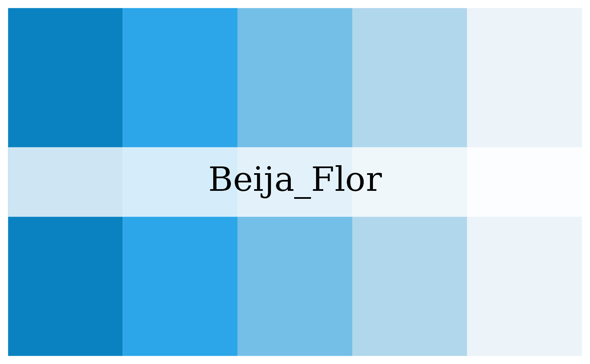
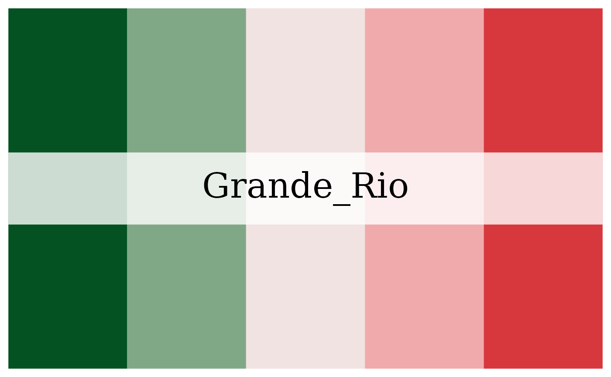
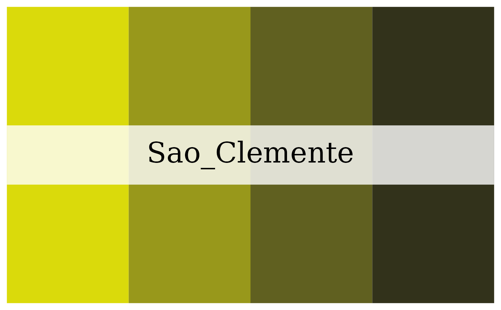
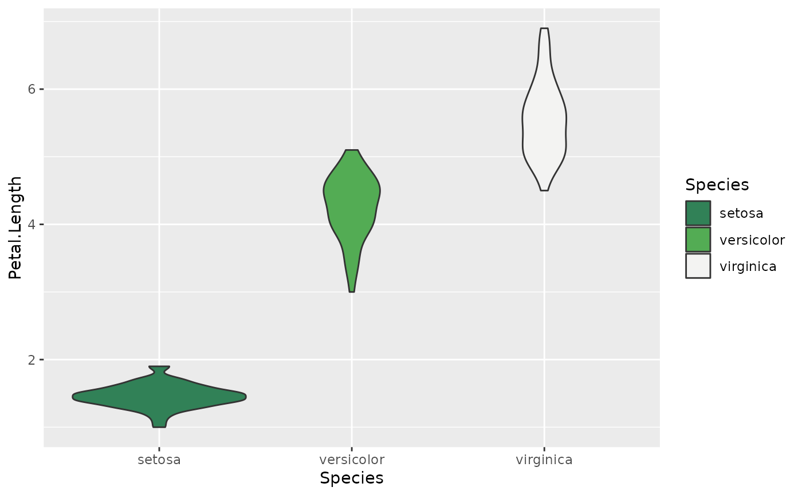
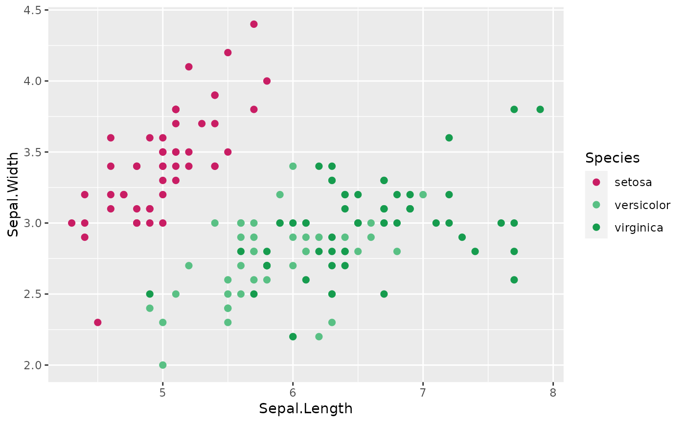
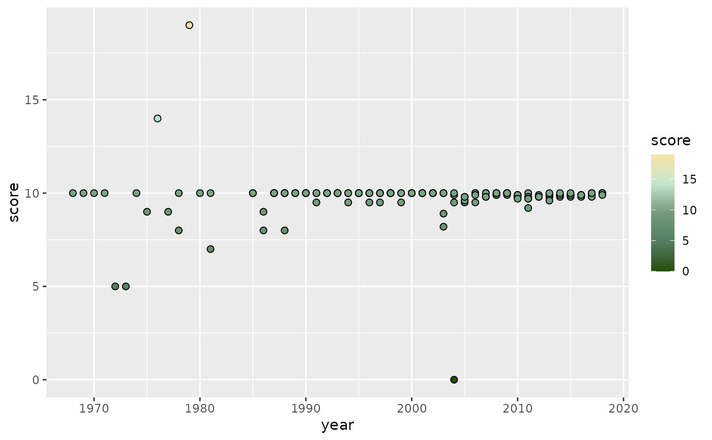

Color palettes inspired by the shields of Carioca Samba Schools. Complete
list of palette colors and the shields that inspired them can be found
on Github. Use
colorblind_friendly() to check whether palettes are
colorblind-friendly.
Arguments
- n
Number of desired colors. If number of requested colors is beyond the scope of the palette, colors are automatically interpolated. If n is not provided, the length of the palette is used.
- type
Either "continuous" or "discrete". Use continuous if you want to automatically interpolate between colors.
- direction
Sets order of colors. Default palette is 1. If direction is -1, palette color order is reversed
- override.order
Colors are picked from palette to maximize readability and aesthetics. This means that colors are not always selected in sequential order from the full palette. If override.order is set to TRUE, colors are selected in sequential order from the full palette instead. Default is FALSE.
- palette
Name of Palette. Choices are:
Beija_Flor,Grande_Rio,Imperatriz_Leopoldinense,Imperio_Serrano,Mangueira,Padre_Miguel,Paraiso_Tuiuti,Portela,Salgueiro,Sao_Clemente,Tijuca,Uniao_Ilha,Vila_Isabel,Viradouro.
Examples
rio_paletter("Beija_Flor")

rio_paletter("Grande_Rio", direction=-1)

rio_paletter("Sao_Clemente", 4, override.order=TRUE)

library(ggplot2)
ggplot(data=iris, aes(x=Species, y=Petal.Length, fill=Species)) +
geom_violin() +
scale_fill_manual(values=rio_paletter("Imperio_Serrano", 3))

ggplot(data=iris, aes(x=Sepal.Length, y=Sepal.Width, color=Species)) +
geom_point(size=2) +
scale_color_manual(values=rio_paletter("Mangueira", 3))

ggplot(data=iris, aes(x=Species, y=Sepal.Width, color=Sepal.Width)) +
geom_point(size=3) +
scale_color_gradientn(colors=rio_paletter("Padre_Miguel"))
